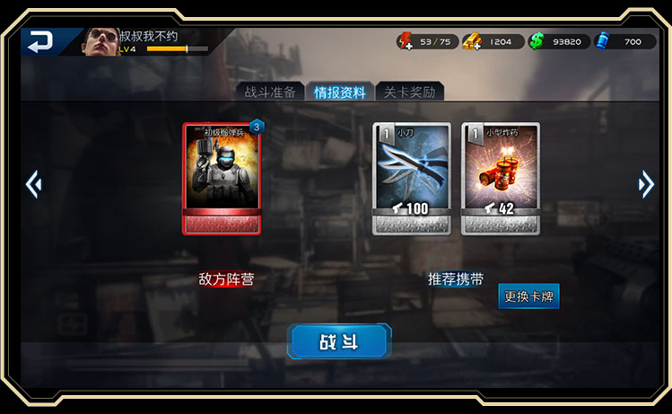
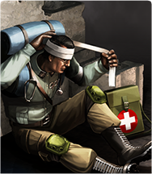
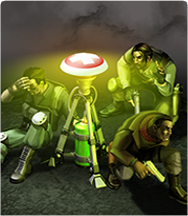
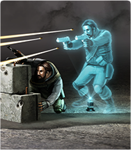

- 背包：里面放的都是宝贝，通关后的道具、系统福利什么的。
- 任务：日常什么的，不用刻意完成，正常去通关基本就能完成。福利也是很给力。
每日5点刷新。 - 活动：各种打折、每日福利、节日福利等等，反正好处多多。
- 充值：应该没啥说的，买金条，大家都懂得。
- 设置：账号切换、音乐、音效、用户中心。
- 前往战场：一部能玩的好莱坞大片就在这里。
- 英雄升级：升品、升级提升英雄的属性。
- 技能强化：提升各种技能等级，威力更强。
- 英雄招募：抽英雄，获得英雄和碎片的来源。
- 科技精华：技能强化必备
- 钞票：英雄升品、技能强化必备，游戏内免费获得。
- 金条：活动赠送、充值获得
- 活力：通关需要消耗活力
- 头像昵称：点击即可修改昵称
界面总览
interface
基本操作
basic operation


系统介绍
system

游戏章节共九章，44小关。

战斗准备阶段可以根据战况更换英雄卡组。
情报资料阶段可以知晓本关Boss与技能卡推荐。

关卡奖励阶段可以看到通关后获得奖励。

英雄招募分为精锐招募和王牌招募；
精锐招募：
每天免费5次，10分钟刷新，冷却时间未到需要消耗招募令（游戏免费获得）；
王牌招募：
每天免费1次，24小时刷新，冷却时间未到需要消耗金条（充值）。
技能分为：通用技能、职业技能，都可以进行升级，技能等级受限于英雄等级。

提升英雄等级可以提升英雄属性，经验书的获得来源于系统奖励。英雄等级受限于角色等级。

提升英雄品阶同样可以提升英雄属性，万能碎片的获得来源于活动。

想要进入通关榜需要满足两个条件：
1、所有敌人全灭；
2、速度要够快。排名最靠前的可以获得金条奖励。
职业介绍
hero
特种职业
万里挑一的精英，进行过外语、心理学、格斗、等特殊科目训练，时常担负破袭敌方重要的政治、经济、军事目标和执行其他特殊任务的职业。拥有非常规的制敌技能，适合在各种恶劣条件下，完成作战任务。
人 员
- 红蜘蛛
- 男爵
- ?
- ?
- ?
突击职业
结合高机动性、高防御力、高火力的综合性职业。担任突击任务者往往拥有超人的勇气以及丰富的作战经验，拥有强力的杀伤性技能，能满足不同战斗环境的需求，瞬间撕开敌人的防线，并且能够提供强大的火力支援和持续压制。
人 员
- 美杜莎
- ?
- ?
爆破职业
爆破者精通爆破装置，是战场的死神，随身携带大范围杀伤性技能。作战目标通常是建筑工事以及敌人防御密集的区域。作为攻坚的排头兵，通过投掷手雷以及C4炸药包等，无论是杀敌还是拆迁，无所不能。
人 员
- 法官
- ?
医疗职业
战场的天使，救人性命于危难之间。每支战队都需要热情勇敢的医疗职业，他们是游戏中唯一的高效治疗单位。当队员中弹倒地或者整个小队都处于伤痕累累的状态时，强大的医疗技能可以瞬间扭转颓势而成为行动成败的关键。
人 员
- 博士
- ?
- ?
重装职业
移动相对缓慢，但拥有强大重型防护以及令人生畏的重火力，俗称人肉坦克，团队之盾。他们在小队中的作用是吸引火力以及火力压制。通过防御类技能的使用，能够大大提高防御能力，嘲讽敌人，为队友争取宝贵时间。
人 员
- 雅典娜
工程职业
工程职业是擅长科技工程的专业人才。他们自称技术宅，热衷于研究和使用各种高科技武器。你永远不知道他们背包里带着什么新装备，有时候突然一面光子墙就会出现，有时候又会是一台自动机枪塔，总能给你意外惊喜。
人 员
- 少校
- 女侠
- ?
- ?
技能大全
Skill description
普通技能 （白卡）
-

护甲穿透
发射的子弹可以对护甲造成伤害，效果持续一段时间后消失
-

创可贴
恢复范围内所有我方英雄的少量生命值。
-

急救
复活范围内我方已阵亡的英雄，并恢复少量的生命值
-
机械维修
恢复范围内我方机械设备一定的生命值，并延续持续时间
-
光学影子
在目标点释放一个光学影子，吸引敌人的攻击，持续时间结束或者生命值为零后，光学影子消失，但在雷达范围内无法使用
-

双重间谍
使范围内敌方普通士兵进行叛变，一段时间内协助我方进行战斗，持续时间结束后重新成为敌方部队
-
雷管炸药
破坏建筑的炸药，投出后需再次点击触发爆炸，对城甲伤害高，生命伤害和护甲伤害较低
-
电磁脉冲
对护甲机枪、特种兵、火焰喷射兵、改造兵有效，可使其进入瘫痪状态无法进行任何行动，效果持续一段时间
-

防火服
对火焰伤害有防护作用，可以抵消部分火焰伤害，效果持续一段时间后消失
-

防毒面具
对毒气伤害有防护作用，可以抵消少量的毒气伤害，效果持续一段时间后消失
-

盾牌防护
可以抵消少许由子弹造成的生命伤害和爆炸伤害，效果持续一段时间后消失
-

机枪炮台
在地面架起一座自动攻击的机枪炮台，当持，续时间结束或者生命为零后，机枪炮台消失，在雷达范围内无法使用
-
疾跑
使我方所有英雄一段时间内增加移动速度，可以快速的追击敌人或者摆脱敌人的追击
-

小刀
投掷出一把小刀，对单个敌人造成生命伤害，但对有护甲的敌人和城甲的建筑无效
-

光学墙
在地面树立一面光学墙体，光学墙体可以阻挡子弹的射击，持续一段时间后自动消失，在雷达范围内无法使用
-

小型炸药
小型的炸弹，对爆炸范围内所有的敌人造成少许伤害
精良技能 （绿卡）
-

普通包扎
恢复范围内所有我方英雄的中等生命值，改为包扎技术后，生命值恢复效果更加明显
-
TNT炸药
升级版雷管炸药，投出后再次点击触发爆炸，对城甲伤害很高，生命伤害和护甲伤害较低
-

防火生化服
对火焰伤害有防护作用，可以抵消大量的火焰伤害，效果持续时间比防火服更长
-

防毒服
对毒气伤害有防护作用，可以抵消部分毒气伤害，效果持续一段时间后消失
-
肌体硬化
可以抵消部分由子弹造成的生命伤害和爆炸伤害，效果持续时间比盾牌防护更长
-

重机枪炮台
在地面架起一座自动攻击的重机枪炮台，当持续时间结束或者生命值为零后，机枪炮台消失，但在雷达范围内无法使用
-

军用匕首
对单个敌人造成很高的生命伤害，投掷距离比匕首更远，但对有护甲和城甲的敌人无效低
-
全息墙
在地面树立一面全息墙，全息墙可以阻挡子弹的射击，持续时间比光学墙更长，墙体也更宽，但在雷达范围内无法使用
-

兴奋剂
短时间内提升我方所有英雄的攻击力，在需要快速解决敌方部队时使用，效果持续一段时间后消失
-

闪光弹
使普通敌人、榴弹兵、重机枪塔、重装兵、燃烧弹兵、毒气兵进入致盲状态，无法进行任何行动，效果持续一段时间
-

马克手雷
威力强大的手雷，对爆炸范围内的所有敌人的生命伤害较高，对护甲和城甲伤害较低
-

火箭筒
可以远距离向敌人发射一枚火箭弹，对单个目标造成强有力的打击，对护甲造成极大的伤害，对生命和城甲伤害较低
-

爆头射击
对范围内所有敌人身上进行标记，点击标记造成较高的生命伤害，但对有护甲和城甲的敌人无效
-
燃烧瓶
范围内燃烧起凶猛的火焰，无视护甲造成较高的生命伤害，对城甲也可以造成一定伤害，对燃烧弹兵和火焰喷射兵无效
-
隐身
使我方所有英雄隐形，隐形状态下移动速度降低，也无法攻击敌人，效果持续一段时间后消失，但在雷达范围内无法使用
-

空中掩护
呼叫战斗直升机对地面范围区域内进行强有力的打击，生命伤害较高，对护甲和城甲伤害一般，但在雷达范围内无法使用
-

空中袭击
呼叫轰炸机对地面范围区域内进行轰炸，对护甲有较高的伤害，对生命和城甲伤害一般，但在雷达范围内无法使用
-

高射炮
呼叫高射炮对地面范围区域内进行炮击，对所有敌人造成较高的伤害，但在雷达范围内无法使用
稀有技能 （蓝卡）
-

强力护甲穿透
针对护甲穿透的不足做了改进，子弹可以对护甲造成大量的伤害，效果持续一段时间后消失
-

绷带包扎
恢复范围内所有我方英雄的中等生命值，由于包扎技术的改进，生命值恢复的更多
-

医疗站
在地面释放一个医疗站，在范围内恢复我方所有英雄大量生命值，持续一段时间后自动消失，但在雷达范围内无法使用
-

全息影像
加强版，持续时间更长，吸引敌人的攻击，持续时间结束或者生命值耗尽后消失，但在雷达范围内无法使用
-
防毒生化服
对毒气伤害有防护作用，可以抵消大量的毒气伤害，效果持续一段时间后消失
-
肌体钢化
可以抵消大量由子弹造成的生命伤害和爆炸伤害，效果持续时间比肌体硬化更长
-

三重机枪炮台
在地面架起一座自动攻击的三重机枪炮台，当持续时间结束后，机枪炮台消失，但在雷达范围内无法使用
-
精钢飞刀
对单个敌人造成极高的生命伤害，投掷距离比军用匕首更远，可以穿透护甲直接对敌人造成伤害，但对城甲无效
-

爆破手雷
威力更为强大的手雷，对爆炸范围内的所有敌人的生命伤害很高，对护甲和城甲伤害较低
-

强力爆头射击
对范围内所有敌人身上进行标记，点击标记造成很高的生命伤害，但对有护甲和城甲的敌人无效
-
烈火瓶
范围内燃烧起凶猛的火焰，无视护甲造成很高的生命伤害，对城甲也可以造成一定伤害，但对燃烧弹兵和火焰喷射兵无效
-

空中支援
呼叫战斗直升机对地面范围区域进行强有力的打击，生命伤害很高，对护甲和城甲伤害一般，但在雷达范围内无法使用
-
空中轰炸
呼叫轰炸机对地面范围区域内进行轰炸，对护甲有很高的伤害，对生命和城甲伤害一般，但在雷达范围内无法使用
-
双管高射炮
呼叫双管高射炮对地面范围区域内进行炮击，对所有敌人造成很高的伤害，但在雷达范围内无法使用
-

卫星定位
通过卫星对地面范围区域内的所有敌人造成很高的伤害，但在雷达范围内无法使用
史诗技能 （紫卡）
-

复苏
急救技术更先进，复活范围内我方已阵亡的英雄，并恢复大量的生命值
-

强效全息影像
在目标点释放一个强效全息影像，拥有大量的生命值持续时间比全息影像更长，但在雷达范围内无法使用
-

猎刀
对单个敌人造成致命性的生命伤害，投掷距离比精钢飞刀更远，可以穿透护甲直接对敌人造成伤害，但对城甲无效
-

高爆手雷
威力最强大的手雷，对大范围内的所有敌人的生命伤害极高，对护甲和城甲伤害较低
-
必杀爆头射击
对范围内所有敌人身上进行标记，点击标记造成极高的生命伤害，但对有护甲和城甲的敌人无效
-

化学燃烧瓶
范围内燃烧起凶猛的火焰，无视护甲造成极高的生命伤害，对城甲也可以造成一定伤害，对燃烧弹兵和火焰喷射兵无效
-

空中打击
呼叫战斗直升机对地面范围区域进行强有力的打击，生命伤害极高，对护甲和城甲伤害一般，但在雷达范围内无法使用
-
集束轰炸
呼叫轰炸机对地面范围区域内进行轰炸，对护甲有极高的伤害，对生命和城甲伤害一般，但在雷达范围内无法使用
-

加农高射炮
呼叫加农高射炮对地面范围区域内进行炮击，对所有敌人造成极高的伤害，但在雷达范围内无法使用
-
卫星激光定位
通过卫星对地面范围区域内的所有敌人造成极高的伤害，由于采用了激光定位技术，作用范围更广，但在雷达范围内无法使用
-
破甲弹
美杜莎
发射的子弹可以对护甲造成伤害，效果持续一段时间后消失
-

摇滚乐
ET
在地面放置一个大功率音响，提升音响周围的本方所有成员枪械攻击，并且有持续恢复少量生命的效果，持续一段时间后自动消失
-

康复
天使
使较大范围内的所有阵亡伙伴复活，并使其恢复血量
-

克隆影像
豆子
在目标点永久释放一个克隆影像，克隆影像拥有一定的血量，血量为零后，克隆影像消失
-

控心术
男爵
使小范围内的敌方普通士兵永久叛变
-
便携炸药
法官
投出后再需再次点击触发爆炸，对血量，护甲和城甲都造成相当的伤害。此炸药有更长的待机时间，待机时间内可随时引爆
-

隔离服
雅典娜
对火焰伤害以及毒气伤害，同时产生防护作用，效果持续一段时间后消失
-

硬化迷彩
坦克
短时间内免疫子弹伤害，减少所受爆炸伤害，但对火焰和毒气无效
-

电磁匕首
水手
投掷出一把匕首，对单个敌人造成致命血量伤害，对有有能量护盾的敌人造成大量能量伤害，对建筑无效
-
光子墙
野猫
永久在地面树立一面光子墙，光子墙可以阻挡子弹的射击
-
致盲弹
水手
对范围内所有敌人造成伤害，并进入致盲状态，此状态下的敌人无法进行任何行动，效果持续时间一段时间，但对建筑类单位无效
-

破片手雷
船长
爆炸后的破片使其拥有更大的杀伤半径，对范围内的所有敌人造成伤害，对血量伤害较高，对护甲和城甲伤害一般
-

要害攻击
大猫
拥有更大的范围半径，对范围内所有敌人身上进行标记，点击标记后造成血量伤害
-

汽油弹
路霸
范围内长时间燃烧起凶猛的火焰，可以透过护甲直接对敌人以及建筑造成持续血量伤害，但对燃烧弹兵和火焰喷射兵无效
-
光学迷彩
忍者
使本方成员隐形，隐形状态下不会降低移动速度，不会被敌人发现但也无法攻击敌人，效果持续一段时间后消失，在敌方雷达附近无法使用该技能
-
防爆盾
刀锋
短时间内，范围内所有子弹伤害免疫，但移动速度大幅度下降
-

麻醉剂
博士
永久在地面树立一面光子墙，光子墙可以阻挡子弹的射击
-
钚电池
女侠
对一定范围内，延续所有本方召唤类单位的召唤时间，并增加其生命值
-

催眠
红蜘蛛
对大范围内的敌方普通士兵进行催眠，使其叛变，叛变较长时间
-

抗毒血清
基佬
回复范围内所有本方成员的中等血量，并在一段时间内 减少队员所受毒气伤害
敌兵介绍
enemies

1-1 榴弹兵

1-5 重机枪塔

2-2 碉堡

2-4 重装兵

3-2 护甲机枪

3-5 特种兵

4-3 燃烧弹兵

4-5 火焰喷射兵

5-3 雷达

6-2 毒气生化兵

7-1 改造兵